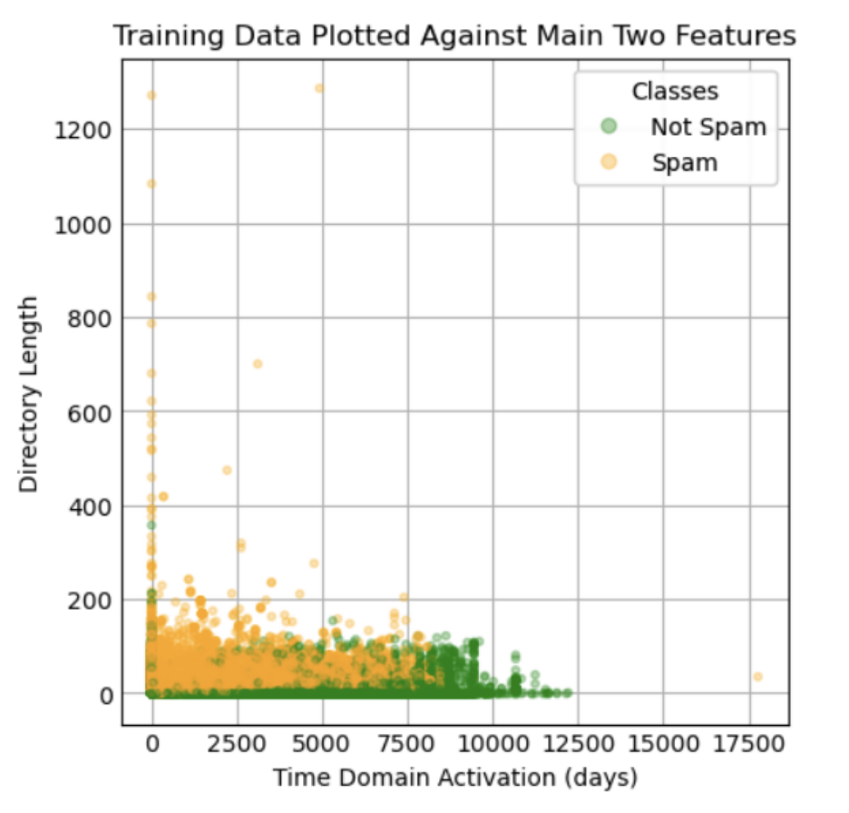

Midterm Report
Introduction/Background
In this era of the internet and technology we have seen a wide increase in fraudulent and phishy websites where the site owner/attacker attempts to gain sensitive information from the user for his/ her own commercial benefit. This has attracted the interest of many to apply machine learning modeling to automatically identify which websites are scams or not based on a particular website’s characteristics and features. In our project, we will take features such as a website’s url length, the types of symbols the url contains, and number of MX servers and apply machine learning techniques to produce whether a website is fraudulent or not.
Problem Definition
Oftentimes, we may receive an email or see a website that grabs our attention. However, how do we know whether we can trust its information? Because of the rising use of the internet, there has been an unfortunate increase in fraudulent sites that compel users to disclose the wrong information as well as have their money stolen. Even though an average young adult can tell something may or may not be a scam because some things are “too good to be true”, many fraudulent websites are starting to look like legitimate sites. This can be especially problematic for the elderly and younger kids who may not understand what the normal of the internet is. Consequently, in our project, we will be using machine learning techniques to identify suspicious websites to protect ourselves from fraud and its negative consequences.
Data Collection
A research study was conducted on a large number of websites on the internet which identified whether a website was scam or legitimate. The study had two variations of datasets: a small dataset with 58,645 websites and a large dataset of 88,647 websites. Each dataset has 111 features which can be divided into six different categories:
A list of all 111 features with a short description of each of their descriptions are given in detail in the linked research article. Taking in all 111 features a boolean Y value (0,1) was given to identify if a website was a scam site or a legitimate site. For our data analysis, we used the larger dataset of n = 88,647 and d = 111 because a larger dataset was more appropriate to the actual number of websites on the internet.
Methods
To avoid overfitting and underfitting, we made 80% of our dataset our training data and 20% our testing dataset and tested our models separately with them. To reduce the dimensions of our data, we applied various methods such as Principal Component Analysis (PCA), Tree Based Feature Selection, and Feature Permutations. After calculating the most important features in our dataset, we trained our model using the Naive Bayes Approach and Random Forests.
Results and Discussion
Pre-Processing
The accurate detection of scam websites involves several varying features such as types of characters found in the url and the number of MX servers. However, many of these features will not be significant when detecting scam websites and many will be correlated to each other; the additional classification from some features will be marginal and may cause overfitting when building a model. Nevertheless, we first attempted to reduce the dimensions by applying Principal Component Analysis. Although, we were able to conclude that 99% of the model could be predicted by 2 features, PCA didn’t take into consideration the y labels of our data. PCA simply maximizes the variance of a given dataset. However, even if the data gets projected onto an axis and separated, the data might not be separable by class. Therefore, we moved on to a forward feature selection technique called Tree-Based Feature Selection as a pre-processing step. Essentially, all the data points are placed at the root of a tree. The tree expands by splitting the data among different features. Each iteration looks at which feature decreases the impurity the most (i.e trying to get the data in each node to be homogenous); impurity is measured through a combination of entropy and the Gini index. Subsequent splits decrease the impurity further until ideally, every leaf is either fully "spam" or fully "not spam". This was the rigorous classification approach we were looking for. We were able to reduce the dimensions of the dataset. Furthermore the features that were found were completely different from the PCA approach. Below is a summary table of the results:
| Number of Features Reduced To | Fractional Importance | Important Feature Names |
|---|---|---|
| 2 | 74.5% |
|
| 3 | 77.7% |
|
| 4 | 80.3% |
|
Table 1: Summary of Tree Based Feature Selection
We considered that impurity-based feature importances may be misleading for high-cardinality features (features which may have many unique values). In other words, there is more information present for features with several different values, thereby ranking those features as more important than ones with less cardinality. Our dataset was susceptible to this, as the number of certain characters within a url may vary tremendously between websites. Therefore we tried a backward feature selection approach called Feature Permutations. In feature permutations, a model score with all the features is calculated. Then a feature is removed, and a new model score is calculated. The difference between the two values is the importance of that feature to the model. This is repeated for all the features.
Through this approach, the importance of a feature reflects its contributions to the entire model, not its intrinsic predictive value. This approach is more costly in terms of time but it was needed to remove the bias from our pre-processing. The model score is based on an external evaluation. We chose to test accuracy, precision, and recall and generate three different feature permutation models. Below is a summary of our results.
| Number of Features Reduced To | Measure Focus | Fractional Importance | Import Feature Names |
|---|---|---|---|
| 2 | Accuracy | 71.01% |
|
| 2 | Precision | 64.8% |
|
| 2 | Recall | 76.2% |
|
| 4 | Accuracy | 77.3% |
|
| 4 | Precision | 74.01% |
|
| 4 | Recall | 82% |
|
Table 2: Summary of Permutation Feature Selection
Through all of our tests of feature permutation and impurity-based feature importance, directory_length" and "time_domain_activation" are the most important features, so we visualized the model by only focusing on these two parameters for now. Below is a scatter plot which shows all the training set data points plotted against these two features.

Looking at the visual, one cannot draw a rough estimate line separating a spam website versus a non-spam website; therefore, more features will be required when building the model. To determine whether a certain number of features is enough, we need to train the model and test its accuracy. Since our y label is a boolean value that can only be 0 and 1, using linear regression would not be a good idea. Therefore, we tested the model using the Naive Bayes Approach, which is perfect for a dataset like ours.
Training Using Gaussian Naive Bayes Approach
In this part, we trained our dataset using a Gaussian Naive Bayes Approach on both the Feature Permutation reduced training dataset and Tree Based Feature Selection reduced training dataset. We measured the accuracy of the model by calculating the percentage of correctly labeled points each model gave out. Below is a summary of the results:
| Data Type | Method | Accuracy |
|---|---|---|
| Training Data | Feature Permutation | 84.0% |
| Test Data | Feature Permutation | 84.5% |
| Training Data | Tree Based Selection | 82.0% |
| Test Data | Tree Based Selection | 53.2% |
Table 3: Naive Bayes Approach Table
Training Using Random Forests
Next, we attempted to use random forests to train our data. These essentially take random data points and then based on the number of selected data points they grow decision trees with more sample data points until each "branch" is pure, or they are leaves. Below is a summary of the results:
| Data Type | Method | Accuracy |
|---|---|---|
| Training Data | Feature Permutation | 97.3% |
| Test Data | Feature Permutation | 93.6% |
| Training Data | Tree Based Selection | 99.4% |
| Test Data | Tree Based Selection | 33.2% |
Table 4: Random Forests Approach Table
From the two methods, we were quickly able to see that the tree based model for feature selection was overfitting the data because of the high accuracy decrease between the training and test data for method training methods. Consequently, we decided to move forward with the Feature Permutation approach for our dimension reduction. As we move forward with the project, we will focus on visualizing and polishing the trained model by implementing polynomial/logistic regression and k-fold cross validation to aid with overfitting/ underfitting. Additionally, we may modify some of the parameters in the naive gaussian bayes implementation, or use another form of naive bayes entirely.
Contribution Table
| Midterm Report Contribution | |
|---|---|
| Dataset final search | Hassan |
| Transfer Content to Github pages | Seo Hyun |
| Format editing and data collection | Hassan |
| Feature Reduction | Abdulrahman |
| ML Model Research | Seo Hyun |
| Generate ML Model and Test model accuracy | Seo Hyun |
| Written Content Modification (Introduction, Methods, Results) | Hassan and Abdulrahman |
| Methods Results and Discussion | Hassan |
| Create visualizations | Abdulrahman |
References
Abbasi, A., Chen, H. A comparison of fraud cues and classification methods for fake escrow website detection. Inf Technol Manag 10, 83–101 (2009). https://doi.org/10.1007/s10799-009-0059-0
Abbasi, A., Zhang, Z., Zimbra, D., Chen, H., & Nunamaker, J. F. (2010). Detecting Fake Websites: The Contribution of Statistical Learning Theory. MIS Quarterly, 34(3), 435–461. https://doi.org/10.2307/25750686
Afanasyeva, O., Shiyan, V., & Goncharova, M. (2021). Cyber Fraud as a Relevant Internet of Things Security Threat. Proceedings of the International Scientific and Practical Conference on Computer and Information Security - Volume 1: INFSEC, 122–126. doi:10.5220/0010619600003170
Vrbančič, G., Fister, I., & Podgorelec, V. (2020). Datasets for phishing websites detection . Data in Brief, 33, 106438. doi:10.1016/j.dib.2020.106438
Files